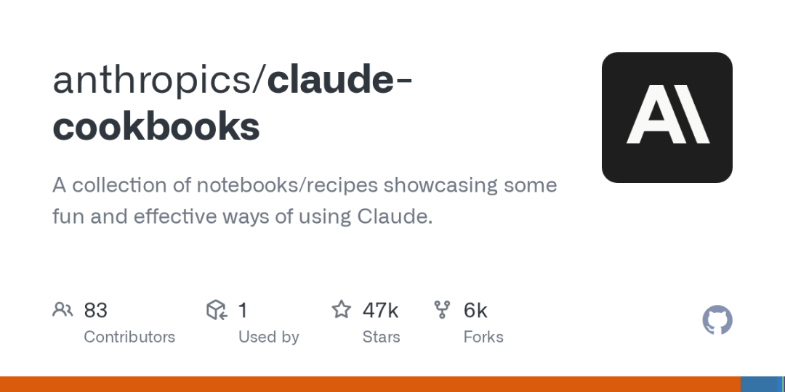

"Don't build agents for everything." ——别把什么任务都做成 Agent，那是模型该干的事。
这是 Anthropic 工程师 Barry Zhang 在 AI Engineer Summit 上一场 15 分钟演讲《How We Build Effective Agents》最扎心的一句话。
Barry Zhang 就职于 Anthropic 的 Applied AI 团队，专门陪企业和创业公司一起造 Agent 系统。这场演讲不聊架构图、不推框架、不炫技，只讲一件事：
过去两年，我们踩过的坑、看穿的假象、总结出的三条铁律。
这篇文章带你把这场演讲的精华吃透，很多观点会颠覆你对 Agent 的理解。
✅ 一、AI 系统的三阶段进化：你到底在哪一阶段？
Barry 一开始就画了一条清晰的进化线，帮你定位自己正处在什么位置。
🔹 第一阶段：简单功能
总结、分类、信息提取 一次 LLM 调用搞定 两年前看着像魔法，今天已经是基础能力 便宜、快、可靠、易 debug
Barry 的提醒：这些能力被严重低估。很多团队一上来就要做 Agent，其实用一个更好的 prompt 就能解决 80% 的问题。
🔹 第二阶段：Workflow（工作流）
一次 LLM 调用不够用了，就把多个模型调用串起来：
提取意图 → 查数据库 → 生成响应 → 校验输出
路径由你写代码定死 模型只负责"模糊部分"（理解语言、生成文本） 可预测、可控、易调试 Anthropic 认为这已经是 Agent 系统的起点
🔹 第三阶段：Agent（真正的智能体）
核心区别：谁决定下一步？
Workflow：你的代码决定路径 Agent：模型自己决定路径
Agent 会观察环境反馈、自己决定调什么工具、自己判断走哪条路。自主性带来能力，但也带来成本、延迟和错误后果的同步上升。
✅ 二、别把 Agent 当默认升级方向（重点！）
这是全场最重的一击。
Agent 不是通用升级包。它是一个针对特定问题的特定工具。 能用 Workflow 就用 Workflow。只有必须用 Agent 时才用 Agent。
Barry 给出了一个 "是否要上 Agent" 的 4 步判断清单：
🔹 判断 1：任务复杂度
▪️ 决策树能画出来？ → 用 Workflow，别用 Agent ▪️ 路径模糊、开放、无法穷举？ → 才考虑 Agent
反例：用户问退款政策 → 查订单 → 判断条件 → 回复。这种路径清晰的任务，写工作流成本更低、更可控。
🔹 判断 2：任务价值
Agent 烧 token 是家常便饭。Barry 举了个非常具体的例子：
如果你做的是高频客服系统，每次任务预算只有 10 美分，大概只能支撑 3-5 万 token。 这种情况下，用工作流覆盖最常见问题就行了。
但如果你说"token 花多少都无所谓"，那 Barry 半开玩笑地说："Anthropic 商业团队很愿意和你聊聊。"
翻译过来：Agent 不是便宜方案，任务价值必须撑得起成本。
🔹 判断 3：关键能力是否可靠
Agent 干活时的每一步"关键能力"（写代码、调试、错误恢复）必须都够可靠。
▪️ 任何一环卡壳 → 成本飙升、重试次数飙升、延迟飙升 ▪️ 解决方案：缩小任务范围，让 Agent 干更聚焦的事
🔹 判断 4：错误代价
问自己两个问题： ▪️ 错误有多贵？ ▪️ 错误有多难发现？
如果错误贵、不可逆、还难发现 → 自主性就变成风险。
Anthropic 的建议：
只给只读权限 加人工审批环节 限制执行范围
✅ 三、编码 Agent 为什么好使？（一个完美案例）
Barry 用编码 Agent作为"完美 Agent 用例"的模板，值得每个想做 Agent 的团队反复看：
▪️ 任务模糊 —— 从设计文档到 PR，无法提前穷举步骤 ▪️ 价值巨大 —— 一次正确的代码修改，杠杆效应极高 ▪️ 模型能力过硬 —— Claude 在编码上已经很强 ▪️ 结果可验证 —— 单元测试、CI 流水线可以客观判断成功
核心洞察：Agent 系统最重要的属性之一是"结果可验证"。这也是为什么客服和编码是 Anthropic 反复推的两大黄金场景。
✅ 四、保持简单：Agent 的核心结构就 3 件事
Barry 反复强调：大多数团队一上来就把 Agent 搞得太复杂。
Anthropic 内部对 Agent 的定义简单到令人震惊：
Agent = Model + Tools + Loop（在一个 Environment 里跑）
三大核心组件：
🔹 1. Environment（环境） —— Agent 操作的系统（浏览器、IDE、操作系统、API 环境） 🔹 2. Tools（工具集） —— Agent 采取行动和拿反馈的接口 🔹 3. System Prompt（系统提示） —— 定义 Agent 的目标、约束、期望行为
然后就是一个 model decision loop：观察 → 决策 → 执行 → 拿反馈 → 循环。
关键洞察：
不同 Agent 应用（编码、搜索、Computer Use）看起来天差地别，但它们的后端架构几乎一模一样。
🚨 大多数团队犯的错
一上来就急着加：
复杂的 reflection loops 多 Agent 编排图 花哨的框架抽象
结果：系统贵、慢、没法 debug。
✅ 正确的迭代顺序
▪️ 先跑通最简单的 Model + Tools + Loop ▪️ 确认基本行为对了 ▪️ 再考虑优化：缓存轨迹、并行工具调用、加进度可视化增强用户信任
✅ 五、Think Like Your Agent（像 Agent 一样思考）
这是全场最反直觉、也最有实操价值的一条。
🔹 开发者常犯的错
从自己的视角去理解 Agent，然后被 Agent 各种"反常错误"搞得莫名其妙。
Barry 的解决方法：把自己塞进 Agent 的上下文窗口里。
🔹 Agent 的真实处境
▪️ 每一步决策只能基于有限的上下文（比如 10k-20k token） ▪️ Computer Use 场景下，Agent 只能看到静态截图 ▪️ 推理和工具执行期间如同"闭眼操作"——它其实什么都看不到
🔹 换位思考练习
Barry 建议每个 Agent 开发者都做一遍：
假装你自己是那个 Agent，只拿到 Agent 拿到的信息，去完成这个任务，看你能不能做到。
做完这个练习，你会发现 Agent 真正需要的是：
屏幕分辨率信息 推荐操作 明确的限制条件
而不是无休止地探索。
🔹 直接问模型自己
Barry 分享了一个骚操作：直接问 Claude 就行。
▪️ "我的指令有没有模糊的地方？" ▪️ "你理解这个工具描述吗？" ▪️ "为什么你做了这个决策？" ▪️ "我怎么帮你做更好的决策？"
用模型来 debug 模型——这就是弥合开发者与 Agent 认知鸿沟的最快方式。
✅ 六、Barry 对 Agent 未来的 3 大预测
演讲最后，Barry 分享了他对 Agent 系统未来的 3 个判断，每一条都值得记下来：
🔹 预测 1：预算感知 Agent（Budget-aware Agents）
现在的 Agent 像脱缰的野马，token 想花就花。
未来的 Agent 必须能： ▪️ 定义时间预算、金钱预算、token 预算 ▪️ 在预算范围内做决策 ▪️ 生产环境部署才能真正放心
🔹 预测 2：自进化工具（Self-evolving Tools）
现在工具都是人类工程师定义的。
未来的 Agent 或许能： ▪️ 自己设计工具 ▪️ 自己改进工具（meta-tools） ▪️ 让工具集适配不同用例
🔹 预测 3：多 Agent 协作
Barry 预计多 Agent 系统会在今年年底大量进入生产。优势非常明确：
▪️ 并行化提升效率 ▪️ 关注点分离 ▪️ 保护主 Agent 的上下文窗口
但关键挑战是：Agent 之间怎么通信？如何实现异步通信，超越目前"用户-助手轮流对话"的模式？
这是 2026 年 Agent 圈最值得关注的技术命题之一。
✅ 七、三句话记住这场演讲
如果你只想记住三句话，就是这三句：
▪️ 1. 别什么都做成 Agent —— Agent 是特定工具，不是通用升级 ▪️ 2. 保持简单 —— Model + Tools + Loop 就够了，别加花活 ▪️ 3. 像 Agent 一样思考 —— 塞进它的上下文窗口，从它的视角看世界
🎯 写在最后
Barry Zhang 这场演讲的独特之处，在于它打破了 Agent 时代的"复杂性崇拜"。
在一个人人都在拼多 Agent 编排、拼 reflection loops、拼各种炫技架构的年代，Anthropic 一线工程师告诉你：
最好的 Agent 系统，长得都很简单。复杂只应该是最后的手段，不是第一选择。
如果你正在做 Agent，不妨用这场演讲的四步判断清单，重新审视一下你手上的方案——
这个任务真的需要 Agent 吗？ 我是不是把系统搞太复杂了？ 我理解 Agent 眼中看到的世界吗？
想清楚这三个问题，你就领先了大多数 Agent 开发团队。
📺 视频原址：https://youtu.be/D7_ipDqhtwk[1]
📖 本文由 OpenClaw 研习社整理，欢迎转发给正在做 Agent 的伙伴。
引用链接
[1]https://youtu.be/D7_ipDqhtwk